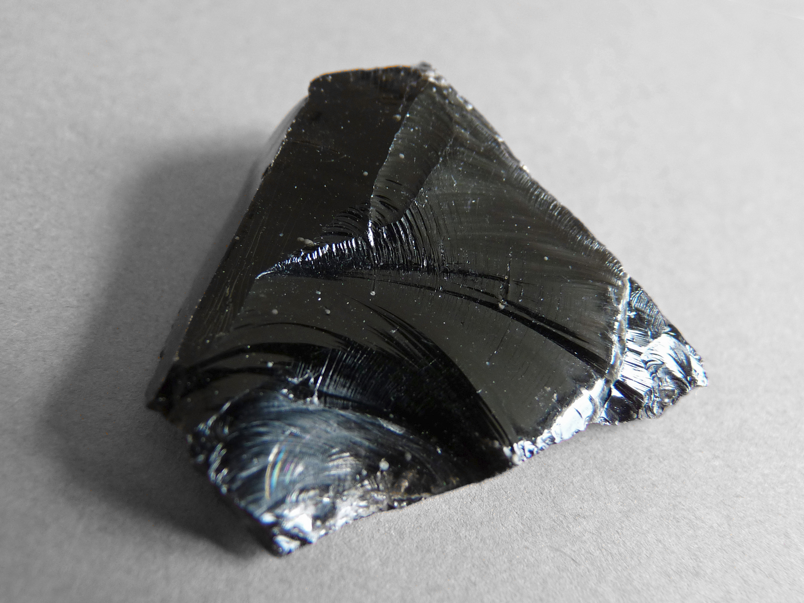

Go to a store
Walk into a store that sells minerals or metaphysical items. Ask the staff if they have any Obsidian for sale. If they do, take a look at the different types they offer. If they don’t, thank them and leave. Go to another store that sells similar items. Repeat the process until you find Obsidian.
Once you find Obsidian, examine its color and texture. Some varieties, like snowflake or mahogany Obsidian, have unique patterns. Ask the staff about its properties and uses. If you like it, decide how much you want to buy. Pay for your Obsidian at the register. Take it home and add it to your collection.
